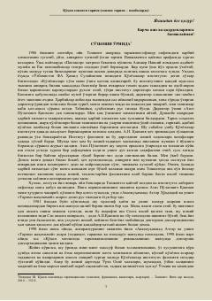

QXQo'qon xonligi tarixiga oid nodir manbalar va tarixnavislik maktabi tahlili.
Ushbu asar Qo'qon xonligi tarixnavislik maktabining shakllanishi, rivojlanishi va uning vakillari tomonidan yozilgan asarlar tahliliga bag'ishlangan xrestomatiya hisoblanadi. Kitobda xonlikning siyosiy, iqtisodiy va madaniy hayotiga oid nodir tarixiy manbalar tarjimalari hamda ilmiy izohlar keltirilgan.